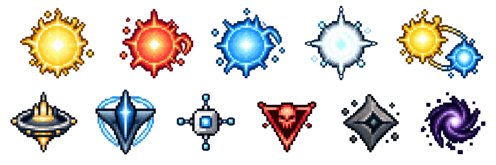

Curiosity
Follow a question until it turns into something. A map, a game, a tool or a page.
In person
No big bio. Just the choices I keep making.
A few of them
Hard questions, small playable things, carefully named files, and characters who make the future feel close.
Anchors
These describe the work, not me.
Follow a question until it turns into something. A map, a game, a tool or a page.
Be clear about what's known, what's early, and what belongs to someone else.
Leave room for names, sound, movement, characters, and the fun of a system reacting to you.
Why the mix
That's why astronomy and software sit side by side here. A good interface can be exact and still make you feel a bit less alone.
See the portfolio